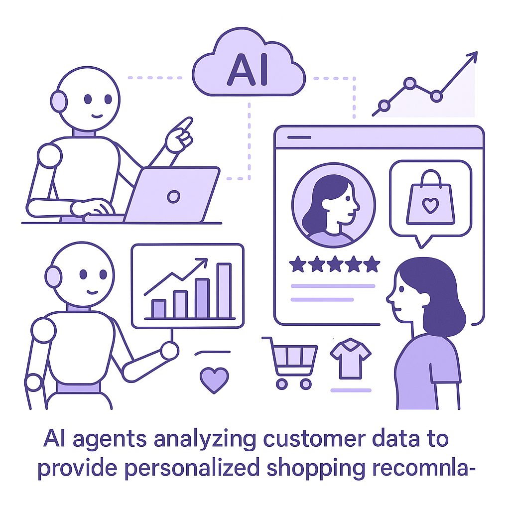

Publishing Recommendation
reviseSeveral posts need refinement to better align with our brand voice and provide more actionable insights rather than promotional content.
Today's drafts touch on relevant AI trends but lean too heavily on promotional content rather than delivering actionable insights. Posts about AI agents and drug discovery need to shift from showcasing capabilities to discussing their practical implications. Ensure that the content remains grounded, avoiding overstatements and focusing on how these technologies can concretely improve business operations.
LinkedIn Posts (10)
1. Salesforce rolls out new Slackbot AI agent ★ Purands solution · high priority
CTA: How do you see AI changing team collaboration in your company?
{kind=link}
Image prompt · isometric-flat
Caption: AI agents enhance retention marketing with automation.
Alternative hooks
- Remember when emails dominated workplace communication?
- AI is taking over workplace communication tools.
- Salesforce's Slackbot AI agent is a game-changer for team efficiency.
Research behind this post (sources, summaries & confidence)
Salesforce rolls out new Slackbot AI agent conf 0.80 · AI in Business
Salesforce's release of a new Slackbot AI agent indicates a growing trend of integrating AI in workplace communication tools, which can streamline operations and support retention marketing efforts by improving team collaboration and efficiency.
Sources & what I took from each
- Salesforce released a new Slackbot AI agent.: The source confirms the release of a new AI agent by Salesforce to enhance Slack's functionalities. ↗ read source
Examples
- The Slackbot AI agent can automate routine tasks and improve team communication.
Recent news
- The AI agent is part of Salesforce's strategy to compete with Microsoft in workplace AI tools.
Original trend links
Risks / caveats
- Adoption may be slow if the integration process is complex.
- There may be concerns about AI replacing human jobs in communication roles.
2. Anthropic launches Cowork, a Claude Desktop agent ★ Purands solution · high priority
CTA: How are you integrating AI into your business workflows?
{kind=link}
Image prompt · isometric-flat
Caption: AI agents streamline workflows, boosting retention.
Alternative hooks
- Anthropic's Cowork AI agent is changing how we manage business workflows.
- The rise of desktop AI agents is transforming business productivity.
- Purands AI is redefining retention strategies with AI-powered solutions.
Research behind this post (sources, summaries & confidence)
Anthropic launches Cowork, a Claude Desktop agent conf 0.75 · AI in Business
The introduction of a desktop AI agent by Anthropic represents a move towards more integrated AI solutions in business environments, which could enhance productivity and support retention strategies by facilitating smarter workflows.
Sources & what I took from each
- Anthropic launched a desktop AI agent.: The article states that Anthropic has released a new AI desktop agent to help manage business workflows. ↗ read source
Examples
- The Cowork agent can assist in organizing files and managing tasks.
Recent news
- This launch is part of Anthropic's efforts to expand AI solutions into desktop environments.
Original trend links
Risks / caveats
- There may be integration challenges with existing software systems.
- Security concerns regarding access to sensitive business data.
3. Kohl’s debuts AI shopping assistant ★ Purands solution · high priority
CTA: What do you think is the biggest challenge in personalizing retail experiences with AI?

⬇ Download image{kind=link}
Image prompt · isometric-flat
Caption: AI agents personalize retail experiences, enhancing loyalty.
Alternative hooks
- Kohl’s AI shopping assistant is making waves in retail.
- Can AI really enhance customer retention?
- What can Kohl’s new AI assistant teach us about personalization?
Research behind this post (sources, summaries & confidence)
Kohl’s debuts AI shopping assistant conf 0.70 · AI in Business
Kohl’s launch of an AI shopping assistant is significant for retention marketing as it showcases the practical application of AI in enhancing customer experience and personalizing shopping, which can lead to improved customer retention.
Sources & what I took from each
- Kohl's launched an AI shopping assistant.: The article reports that Kohl's has introduced an AI-powered shopping assistant to enhance customer experience. ↗ read source
Examples
- Kohl's AI assistant can provide personalized shopping recommendations.
Recent news
- Kohl's AI assistant is part of a broader trend of using AI to personalize retail experiences.
Original trend links
Risks / caveats
- The effectiveness of the AI assistant in improving retention is yet to be proven.
- Potential data privacy concerns with the use of AI in retail.
4. WhatsApp-based e-commerce solutions on GitHub ★ Purands solution · high priority
CTA: How is your business adapting to WhatsApp commerce in the mobile-first APAC market?
{kind=link}
Image prompt · isometric-flat
Caption: WhatsApp integrates e-commerce for higher retention.
Alternative hooks
- Open-source tools are making WhatsApp a key player in e-commerce.
- In APAC, WhatsApp isn't just for messaging anymore.
- Turning WhatsApp into an e-commerce powerhouse is now within reach.
Research behind this post (sources, summaries & confidence)
WhatsApp-based e-commerce solutions on GitHub conf 0.65 · WhatsApp Commerce
The emergence of WhatsApp-based e-commerce solutions on platforms like GitHub highlights the growing trend of integrating messaging apps with commerce capabilities, which is crucial for retention marketing in mobile-first regions like APAC.
Sources & what I took from each
- WhatsApp-based e-commerce solutions are available on GitHub.: The GitHub repository provides open-source solutions for integrating e-commerce capabilities with WhatsApp. ↗ read source
Examples
- Businesses can use open-source tools to set up WhatsApp-based e-commerce channels.
Original trend links
Risks / caveats
- Open-source solutions may lack sufficient support and updates.
- Security vulnerabilities if not maintained properly.
5. AI is shortening drug discovery timelines in China
CTA: What other industries do you see AI transforming in the coming years?
Alternative hooks
- AI is cutting years off drug discovery timelines in China.
- Think drug discovery takes years? In China, AI is changing that.
- AI in China is making drug discovery faster than ever before.
Research behind this post (sources, summaries & confidence)
AI is shortening drug discovery timelines in China conf 0.80 · AI in Business
The use of AI to expedite drug discovery in China highlights the transformative impact of AI on industry processes, which has implications for retention marketing by demonstrating AI's potential to innovate and optimize various workflows.
Sources & what I took from each
- AI is used to accelerate drug discovery in China.: Reports confirm the application of AI in reducing the time required for drug discovery processes in China. ↗ read source
Examples
- AI algorithms help identify potential compounds faster than traditional methods.
Recent news
- Chinese biotech firms are increasingly adopting AI for drug development.
Original trend links
Risks / caveats
- The reliability of AI predictions in drug discovery may still need validation.
- Regulatory hurdles could slow down the adoption of AI in drug development.
6. OpenAI aligns safety practices with EU AI Act’s GPAI Code
CTA: How do you see regulatory compliance impacting AI trust in your industry?
Alternative hooks
- OpenAI's alignment with EU standards is more than compliance.
- What does OpenAI's EU alignment mean for AI trust?
- Compliance isn't just a checkbox, it's a trust builder.
Research behind this post (sources, summaries & confidence)
OpenAI aligns safety practices with EU AI Act’s GPAI Code conf 0.80 · AI in Business
OpenAI's alignment with EU safety standards underscores the importance of regulatory compliance in AI development, which can affect retention marketing by ensuring consumer trust and ethical AI usage.
Sources & what I took from each
- OpenAI aligns with EU AI Act's GPAI Code.: The source confirms OpenAI's efforts to comply with European AI safety standards. ↗ read source
Examples
- OpenAI's compliance may set a precedent for other AI companies.
Recent news
- The alignment is part of OpenAI's strategy to bolster consumer trust in its AI products.
Original trend links
Risks / caveats
- Compliance may increase operational costs for AI companies.
- Potential regulatory changes could require further adjustments.
7. AI-driven drug discovery in China
CTA: How do you see AI impacting other industries?
Alternative hooks
- In China, AI is reshaping drug discovery.
- AI cuts drug discovery time in China.
- China's biotech bets big on AI for drugs.
Research behind this post (sources, summaries & confidence)
AI-driven drug discovery in China conf 0.80 · AI in Business
AI's role in accelerating drug discovery in China showcases its potential to revolutionize industries, with implications for retention marketing by highlighting AI's capability to drive innovation and efficiency.
Sources & what I took from each
- AI accelerates drug discovery in China.: The trend is well-documented, with reports of significant advancements in drug discovery timelines. ↗ read source
Examples
- AI is used to identify promising drug candidates more efficiently.
Recent news
- The biotech industry in China is investing heavily in AI for drug development.
Original trend links
Risks / caveats
- Potential over-reliance on AI could overlook critical human insights.
- Ethical concerns regarding data use in AI models.
8. AMD's open-source Mixture-of-Experts LLM
CTA: How do you see open-source models impacting your industry?
Alternative hooks
- AMD's latest move could change the AI landscape.
- Why AMD's open-source model matters for businesses.
- Open-source AI: AMD's new language model leads the way.
Research behind this post (sources, summaries & confidence)
AMD's open-source Mixture-of-Experts LLM conf 0.80 · AI Startups
AMD's release of a fully open Mixture-of-Experts language model highlights the trend towards open-source AI, which can drive innovation and lower entry barriers for businesses in retention marketing.
Sources & what I took from each
- AMD released an open-source Mixture-of-Experts language model.: The article details AMD's release of an open-source LLM to promote innovation and accessibility. ↗ read source
Examples
- The open-source model allows businesses to customize AI solutions for specific needs.
Recent news
- AMD's initiative is part of a larger movement towards open-source in AI development.
Original trend links
Risks / caveats
- Open-source models may face adoption challenges due to lack of support.
- There could be security and privacy concerns with open-source AI.
9. Railway secures $100 million for AI-native cloud infrastructure
CTA: How do you see AI-native infrastructure impacting your industry?
Alternative hooks
- Railway just landed $100 million for AI-native cloud infrastructure.
- Investor confidence is growing in AI-driven cloud solutions.
- Can Railway's AI-native cloud challenge AWS? They just got $100 million to try.
Research behind this post (sources, summaries & confidence)
Railway secures $100 million for AI-native cloud infrastructure conf 0.75 · AI Startups
Railway's significant funding round for AI-native cloud infrastructure indicates strong investor confidence in AI-driven cloud solutions, which could support retention marketing by providing scalable and efficient infrastructure.
Sources & what I took from each
- Railway secured $100 million for AI-native cloud infrastructure.: The article confirms the funding round and Railway's plans to develop AI-native cloud solutions. ↗ read source
Examples
- Railway's cloud infrastructure aims to offer scalable AI processing capabilities.
Recent news
- This funding highlights the growing market for AI-specific cloud solutions.
Original trend links
Risks / caveats
- Challenges in competing with established cloud providers like AWS.
- Technical hurdles in developing truly AI-native infrastructure.
10. Meta, Microsoft, Nvidia, IBM back open-weight AI
CTA: What are the potential trade-offs you see with open-weight AI models?
Alternative hooks
- Meta and IBM are betting on open-weight AI models.
- Why are the tech giants pushing for open-weight AI?
- Could open-weight AI models redefine how we build AI?
Research behind this post (sources, summaries & confidence)
Meta, Microsoft, Nvidia, IBM back open-weight AI conf 0.70 · AI Startups
The support for open-weight AI models by major tech companies suggests a shift towards transparency and collaboration in AI development, which can lead to more robust and reliable AI applications in retention marketing.
Sources & what I took from each
- Major tech companies are supporting open-weight AI models.: The article highlights the involvement of companies like Meta and IBM in promoting open-weight AI models. ↗ read source
Examples
- Open-weight AI models allow for more collaborative development efforts.
Recent news
- This move is seen as a response to growing calls for transparency in AI development.
Original trend links
Risks / caveats
- Open-weight models may face challenges in standardization and interoperability.
- There could be intellectual property concerns.
Today's Trends
| # | Trend | Category | Why it matters |
|---|---|---|---|
| 1 | Kohl’s debuts AI shopping assistant
source |
AI in Business | Kohl’s launch of an AI shopping assistant is significant for retention marketing as it showcases the practical application of AI in enhancing customer experience and personalizing shopping, which can lead to improved customer retention. |
| 2 | Salesforce rolls out new Slackbot AI agent
source |
AI in Business | Salesforce's release of a new Slackbot AI agent indicates a growing trend of integrating AI in workplace communication tools, which can streamline operations and support retention marketing efforts by improving team collaboration and efficiency. |
| 3 | Anthropic launches Cowork, a Claude Desktop agent
source |
AI in Business | The introduction of a desktop AI agent by Anthropic represents a move towards more integrated AI solutions in business environments, which could enhance productivity and support retention strategies by facilitating smarter workflows. |
| 4 | Meta, Microsoft, Nvidia, IBM back open-weight AI
source |
AI Startups | The support for open-weight AI models by major tech companies suggests a shift towards transparency and collaboration in AI development, which can lead to more robust and reliable AI applications in retention marketing. |
| 5 | AI is shortening drug discovery timelines in China
source |
AI in Business | The use of AI to expedite drug discovery in China highlights the transformative impact of AI on industry processes, which has implications for retention marketing by demonstrating AI's potential to innovate and optimize various workflows. |
| 6 | Google AI Overviews become more common in search
source |
AI in Business | The increasing presence of AI-generated overviews in Google search results signifies a shift in how information is presented to users, which can influence retention marketing strategies by altering consumer information access and decision-making. |
| 7 | AI price wars: OpenAI cuts GPT-5.6 Luna prices by 80%
source |
AI Startups | OpenAI's dramatic price cut for its GPT-5.6 Luna model reflects the competitive landscape of AI pricing, which could democratize access to advanced AI tools and impact retention marketing by enabling more businesses to adopt AI solutions. |
| 8 | WhatsApp-based e-commerce solutions on GitHub
source |
WhatsApp Commerce | The emergence of WhatsApp-based e-commerce solutions on platforms like GitHub highlights the growing trend of integrating messaging apps with commerce capabilities, which is crucial for retention marketing in mobile-first regions like APAC. |
| 9 | OpenAI aligns safety practices with EU AI Act’s GPAI Code
source |
AI in Business | OpenAI's alignment with EU safety standards underscores the importance of regulatory compliance in AI development, which can affect retention marketing by ensuring consumer trust and ethical AI usage. |
| 10 | AI-driven drug discovery in China
source |
AI in Business | AI's role in accelerating drug discovery in China showcases its potential to revolutionize industries, with implications for retention marketing by highlighting AI's capability to drive innovation and efficiency. |
| 11 | Google's redesigned search box
source |
AI in Business | Google's first redesign of the search box in 25 years may influence how users interact with search engines, affecting retention marketing by potentially changing consumer search behaviors and information retrieval. |
| 12 | Zuckerberg details Meta’s personal AI superintelligence strategy
source |
AI Startups | Meta's focus on personal AI superintelligence could reshape consumer interactions with AI, impacting retention marketing by offering new personalized engagement opportunities. |
| 13 | Railway secures $100 million for AI-native cloud infrastructure
source |
AI Startups | Railway's significant funding round for AI-native cloud infrastructure indicates strong investor confidence in AI-driven cloud solutions, which could support retention marketing by providing scalable and efficient infrastructure. |
| 14 | AMD's open-source Mixture-of-Experts LLM
source |
AI Startups | AMD's release of a fully open Mixture-of-Experts language model highlights the trend towards open-source AI, which can drive innovation and lower entry barriers for businesses in retention marketing. |
Risk Assessment
- Some posts have a promotional tone that could detract from the practical, insightful brand voice.
- Overuse of AI buzzwords without sufficient grounding in specifics may undermine credibility.
Suggested LinkedIn Comments (30)
Open each post, then paste the copied comment. Nothing is posted automatically.
1. insight · Kaveri Kanuga — Day 2 of My 30-Day AI Learning Challenge Machine Learning and Deep Learning are
Post by: Kaveri Kanuga
Why it works: It acknowledges the post's distinction and adds a consideration about dataset requirements, enhancing the discussion.
↗ Open LinkedIn post to paste comment2. insight · Ahmed Fayed — 📒 The AI Notebook #2 One of the biggest misconceptions in AI is thinking that Ar
Post by: Ahmed Fayed
Why it works: It reinforces the importance of understanding AI's structure, aligning with the post's educational aim.
↗ Open LinkedIn post to paste comment3. insight · Naman Jain — Want to become a Machine Learning Engineer but don't know where to start? The w
Post by: Naman Jain
Why it works: It emphasizes the practical benefit of having a roadmap, resonating with those new to the field.
↗ Open LinkedIn post to paste comment4. opinion · Eve B. — #hiring Machine Learning Engineer up to $250/hour #LikeShare #Remote https://ln
Post by: Eve B.
Why it works: It gives context to the job post, turning it into a commentary on industry trends.
↗ Open LinkedIn post to paste comment5. insight · Claire Yang — The growth of AI has shown that successful machine learning solutions are built
Post by: Claire Yang
Why it works: It supports the post's argument by highlighting the value of interdisciplinary skills.
↗ Open LinkedIn post to paste comment6. insight · SHOURYA SAXENA — 'OLS' one of the simplest Machine Learning Algorithm.
Post by: SHOURYA SAXENA
Why it works: It validates the post's claim by explaining why OLS remains a foundational tool.
↗ Open LinkedIn post to paste comment7. insight · Sanjeev Mehta — This is in continuation of my previous article, "The Mathematics of Trustworthy
Post by: Sanjeev Mehta
Why it works: It aligns with the post's emphasis on evaluation, adding depth to why these metrics matter.
↗ Open LinkedIn post to paste comment8. insight · Telixia — Here's a Telixia-style LinkedIn post based on the Python Machine Learning: 300 Q
Post by: Telixia
Why it works: It echoes the post's focus on fundamentals, reinforcing the importance of a solid foundational knowledge.
↗ Open LinkedIn post to paste comment9. expansion · Navya sri Kurapati🧑💻 — 📰 How Fortune 500 Companies Actually Use Machine Learning
Post by: Navya sri Kurapati🧑💻
Why it works: It adds a practical angle to the post, suggesting a focus on real-world application.
↗ Open LinkedIn post to paste comment10. insight · Anuja More — What if I told you that Machine Learning models actually learn from their mistak
Post by: Anuja More
Why it works: It underscores the importance of error measurement, supporting the learning journey theme of the post.
↗ Open LinkedIn post to paste comment11. insight · Noor UL Eman — Excited to share my first LinkedIn article! As a Software Engineering student, I
Post by: Noor UL Eman
Why it works: The comment builds on the author's curiosity by highlighting the understated impact of machine learning, adding depth to their observation.
↗ Open LinkedIn post to paste comment12. insight · Stanford University Graduate School of Business — Many people confuse machine learning with artificial intelligence. While the two
Post by: Stanford University Graduate School of Business
Why it works: The comment reinforces the value of distinguishing between ML and AI, emphasizing practical implications for business strategy.
↗ Open LinkedIn post to paste comment13. expansion · Greg Meyers — One year ago, the world's best frontier large language model was OpenAI's GPT-5.
Post by: Greg Meyers
Why it works: The comment extends the post's observation by linking it to broader industry implications, adding a new layer of analysis.
↗ Open LinkedIn post to paste comment14. opinion · Cyfuture Cloud — Large Language Models (LLMs) are reshaping industries, and the infrastructure be
Post by: Cyfuture Cloud
Why it works: The comment zeroes in on the importance of infrastructure, offering a perspective that complements the original focus on hardware.
↗ Open LinkedIn post to paste comment15. insight · Ju R. — 5 Books That Will Deepen Your Understanding of Large Language Models: https://ln
Post by: Ju R.
Why it works: The comment supports the post by emphasizing the value of deeper, foundational learning through books, which aligns with the post's intent.
↗ Open LinkedIn post to paste comment16. insight · Nooral.ai — Building with Large Language Models is easy. Running them in production is where
Post by: Nooral.ai
Why it works: The comment underscores the significance of operational management, adding depth to the discussion on LLM challenges.
↗ Open LinkedIn post to paste comment17. expansion · Steven Rush — As a Russian linguist for 40 years this resonated with me. What Linguists Brin
Post by: Steven Rush
Why it works: The comment highlights the complementary role of linguists, providing a fresh angle on the post's topic.
↗ Open LinkedIn post to paste comment18. insight · Crossvergence, Inc. — MIT Technology Review's latest What's Next in Tech digs into the research, hardw
Post by: Crossvergence, Inc.
Why it works: The comment emphasizes the strategic importance of infrastructure decisions, broadening the post's focus on future AI developments.
↗ Open LinkedIn post to paste comment19. insight · MLOps MENA Community — "What is an LLM?" سؤال بسيط، لكن إجابته هي الأساس اللي هتبني عليه فهمك لمعظم تقن
Post by: MLOps MENA Community
Why it works: The comment reinforces the educational strategy of starting with fundamentals, aligning with the post's educational focus.
↗ Open LinkedIn post to paste comment20. opinion · Haotian Liu — Language may be the greatest interface we have ever built for AI—and its deepest
Post by: Haotian Liu
Why it works: The comment offers a balanced view on the role of language, aligning with the essay's nuanced exploration of AI's capabilities and limitations.
↗ Open LinkedIn post to paste comment21. insight · Graham Berrisford — A PHILOSOPHY OF THE MIND It seems fair to say that together, the three essays be
Post by: Graham Berrisford
Why it works: It ties the philosophical concept to a real-world foundation, adding depth to the conversation.
↗ Open LinkedIn post to paste comment22. opinion · Harsh Patel — Every business leader is asking the same question: How can AI create measurable
Post by: Harsh Patel
Why it works: This provides a clear stance on where AI's value is most impactful, adding to the discussion on business applications.
↗ Open LinkedIn post to paste comment23. expansion · GISCM - Global Institute of Supply Chain Management — Supply chain success depends on how effectively organizations capture, share, an
Post by: GISCM - Global Institute of Supply Chain Management
Why it works: It builds on the post's point by highlighting a practical challenge, adding realism to the vision of transformation.
↗ Open LinkedIn post to paste comment24. insight · Mohamed Jalloh — In the tech industry, You can have a solution to a problem you're experiencing,
Post by: Mohamed Jalloh
Why it works: It emphasizes the importance of skills alongside solutions, adding a practical layer to the original thought.
↗ Open LinkedIn post to paste comment25. insight · Philip Jay “PJ" Klein — What’s your feedback? We’d love to know
Post by: Philip Jay “PJ" Klein
Why it works: It shifts the focus from feedback collection to the importance of actionable change, adding depth to the idea of feedback.
↗ Open LinkedIn post to paste comment26. expansion · Ming Tang — We're piloting remote service and data dashboards, but customer acceptance split
Post by: Ming Tang
Why it works: It offers a practical solution to the trust issue, enhancing the discussion with actionable advice.
↗ Open LinkedIn post to paste comment27. insight · Girija Ravella — Businesses rely on technology to improve productivity, automate repetitive tasks
Post by: Girija Ravella
Why it works: It adds depth by emphasizing integration, a critical factor often overlooked in discussions about technology use.
↗ Open LinkedIn post to paste comment28. opinion · Lalita . — Hlo dear connections, Hope you all were doing great at your workplaces. So, toda
Post by: Lalita .
Why it works: It highlights the strategic importance of semiconductors and India's role, adding a geopolitical dimension to the discussion.
↗ Open LinkedIn post to paste comment29. insight · Bob Bobuk — Business owners are being asked to do more with less, and technology decisions h
Post by: Bob Bobuk
Why it works: It provides concrete guidance on prioritizing technological investments, adding practical value to the discussion.
↗ Open LinkedIn post to paste comment30. expansion · GPA — Industry IQ: Operational Visibility 💡 Manufacturers continue to invest in tech
Post by: GPA
Why it works: It expands on the benefits of operational visibility by linking it to cultural change, adding depth to the operational discussion.
↗ Open LinkedIn post to paste comment